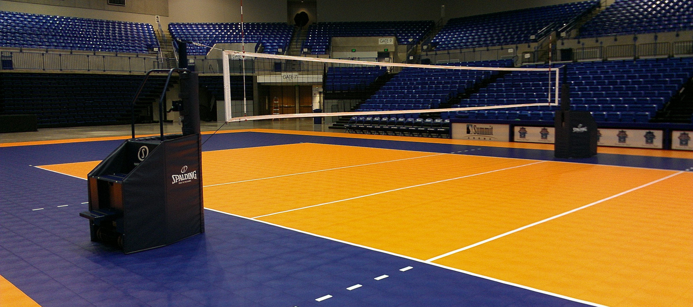
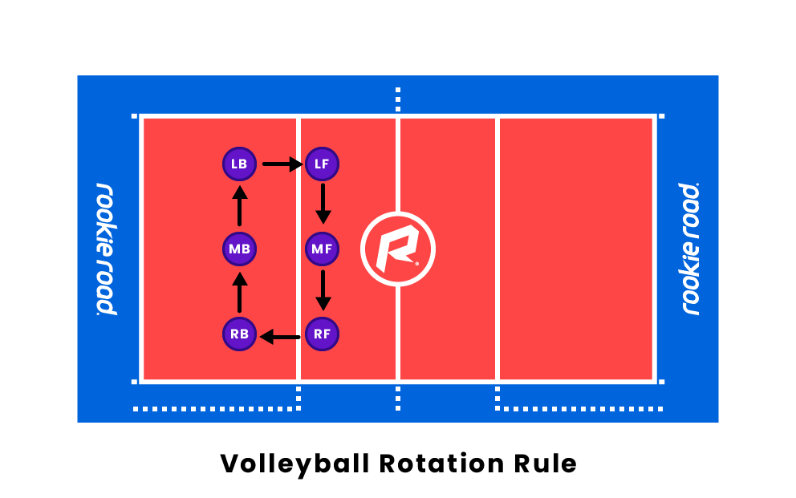

| |
 |
Kas ir volejbols?
Volejbols ir komandu sporta veids, kurā divas komandas sacenšas, lai gūtu punktus, piezemējot bumbu pretējās komandas laukuma pusē vai piespiežot pretinieku komandai pieļaut kādu kļūdu. Katra komanda parasti sastāv no sešiem spēlētājiem, lai gan pastāv atšķirības dažādiem spēles līmeņiem un spēles formātiem. Spēle notiek uz taisnstūra laukuma, kas sadalīts ar tīklu, kur katra komanda aizņem vienu laukuma pusi.
| |
| |
Noteikumi
Volejbola galvenais mērķis ir raidīt bumbu pāri tīklam un pretinieka laukumā, vienlaikus neļaujot pretinieku komandai to darīt. Spēlētāji izmanto sitienu, piespēļu, iestatīšanas un bloķēšanas paņēmienu kombināciju, lai kontrolētu bumbu un pārspētu savus pretiniekus. Komanda, kas uzvar rallijā, nopelna punktu un tiesības servēt, un spēles parasti ilgst līdz iepriekš noteiktam punktu vai setu skaitam.
| |
 |